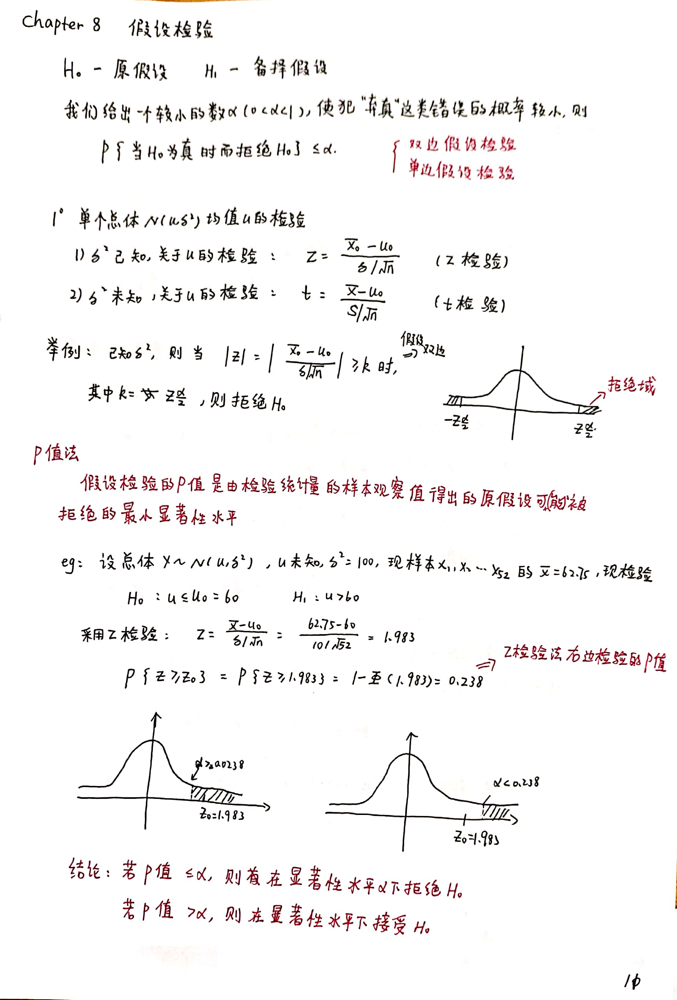

在之前简单的 ABtest 过程中，实验效果经常是有小幅变化。这个时候问题来了：实验结果是受我们抽样的数据波动影响还是真实的效果提升？借助于数理统计的知识，我们可以知道一个相对正确的答案。
一些基础知识
主要是《概率论与数理统计》中“假设检验”这一章的知识，包括但不限于
- 总体与样本
- 正态分布
- $t$ 分布
- 假设检验
- $P$ 值法
- …
这里重点说一下我觉着比较重要的几个点。
$t$ 分布
很多时候，我们不知道总体的均值，只知道样本的均值，这个时候我们只能用样本均值近似代替总体均值进行计算（ $z$ 分布）。但是当样本量不够的时候，$t$分布就有了用武之地。
设 $X \sim N(0,1),Y \sim {\chi}^2(n)$,且$X,Y$相互独立，则称
满足自由度为 $n$ 的 $t$ 分布，记为 $t \sim t(n)$
假设检验
假设检验是利用样本数据来推断总体数据的某些性质。我们先对总体数据提出某种假设，然后利用样本数据来判断假设是否成立。
假设检验的方式：
- 提出原假设和备择假设，不需要证明的或者是我们着重考虑的放原假设，需要证明的放备择假设
- 确定检验方法和检验统计量，并计算其分布
- 确定显著性水平 $\alpha$
- 确定拒绝域。如果统计量落在拒绝域，则拒绝原假设，反之则接受原假设
拒绝域即拒绝原假设的区域，其概率即为显著性水平。常用显著性水平如5%、1%等，即在原假设成立的条件下，样本值落在拒绝域的概率很低，是一个小概率事件，按照实际推断原理，小概率事件在一次抽样中一般是不会发生的，因为我们有理由认为样本值落在拒绝域的时候，原假设是不成立的。
不过实际推断原理只是说在一次抽样中，小概率事件可以认为是不会发生的，而不能肯定绝对不发生。因此，有一定概率在原假设成立的情况下，统计量落入拒绝域，导致我们拒绝原假设。这种情况实际上是一种错误，在假设检验中，称这种错误为第一类错误，也就是“弃真”错误，发生的概率记作 α，即显著性水平。另一种错误是原假设不成立，但是接受了原假设，称为第二类错误，即“受伪”错误，它发生的概率记作 β。
由于抽样的随机性，我们不可能完全排除这两类错误的发生，因此只能把这两类错误控制在一定的范围之内。当样本容量 n 确定之后，犯两类错误的概率不可能同时降低，通常我们会用一个较小的显著性水平 α 来控制第一类错误的发生，因为原假设一般是结合问题特点提出的，需要着重考虑的假设，不应该轻易拒绝，所以第一类错误的概率要控制得较小。这种只控制犯第一类错误的概率，而不考虑犯第二类错误的概率的检验，称为显著性检验
上面这段我觉得说得很好，告诉我们该如何去设计的我们的假设。为什么我们要设计一个很小的显著性水平？（因为我们原假设是经验告诉我们的正确的，不会轻易被拒绝的，我们优先保证不会范“弃真”这个错误）
另外还有单/双边检验的问题，这个是计算的问题，主要是备择假设是否具有方向性，这里可以先不说，画个图就很好理解了。
$P$ Value
教材上定义：假设检验的 $P$ 值是由检验统计量的样本观察值得出的原假设可被拒绝的最小显著性水平。
- 如果 $P <= \alpha$ , 则在当前显著性水平下拒绝原假设
- 如果 $P > \alpha$ , 则在当前显著性水平下接受原假设
也可以这么想：如下图笔记中定义 $P$ 值的计算方式
如果我们计算出来的值小于显著性水平，那么我们的条件就是成立的，即应该拒绝原假设。
附上《假设检验》学习笔记。

举个例子
假设我们有 AB 两个方案，样本容量为 $N$ （两方案不一定相等），转化率为 $P$ ，现在转化率差异不大，我们想知道这两个方案的转化率是否有显著差异。
那么我们可以很明显的知道数据满足伯努利分布:
提出假设
确定检验方法
样本量 $N$ 足够大，满足中心极限定理,我们可以使用 $Z$ 检验。因为是检验样本间有无差异，我们确定 $Z$ 值计算方法为：
确定显著性水平
pass
计算检验量
伯努利分布的数学期望为$E(x) = N \cdot P$ ， 方差则是 $D(x) = NP \cdot (1-P)$ 。
样本均值计算公式为：
样本方差计算公式为：
检验结果
可以参考 $P$ 值的方式，不过 $Z$ 是绝对值，附表如下：
| $Z$ | $P$ | 显著程度 |
|---|---|---|
| $> 2.58$ | $< 0.01$ | 非常显著 |
| $> 1.96$ | $< 0.05$ | 显著 |
| $< 1.96$ | $> 0.05$ | 不显著 |
最后根据计算的结果得出结论即可，至此，关于 ABtest 的结果检验完成。当然了，还有其他的检验问题，比如确定一个样本和总体的差异是否显著。慢慢来。
相关链接
文章内容基本来自大佬的这篇文章abtest数据分析，确实写得太好了。本文是看了大佬的文章结合自己的知识整理而成，这里给大佬送上冰可乐。
当然还有下面这几篇文章：